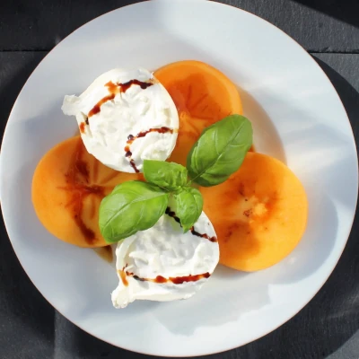

Fuyu Persimmon and Burrata Caprese Salad

The delicate, sweet persimmon flesh pairs well with creamy burrata in this super simple caprese salad. Drizzled with a balsamic glaze and
embellished with fresh basil leaves make a beautiful presentation.
Ingredients
- 1 Fuyu persimmon, stem removed and sliced into rounds
- 1 (4 ounce) ball burrata cheese
- 1 ½ teaspoons balsamic glaze
- 1 ½ teaspoons extra-virgin olive oil
- 5 leaves fresh basil, or more to taste
- 1 pinch freshly ground black pepper
Steps
- Place persimmon rounds on a platter.
-
Cut burrata ball into 5 or 6 pieces, ensuring that each piece has some of the firm outer shell (mozzarella) as well as some of the creamy inside
(stracciatella and cream).
- Distribute burrata pieces around persimmon rounds.
- Drizzle with balsamic glaze and olive oil.
- Scatter basil leaves on top and sprinkle with pepper.
HOME